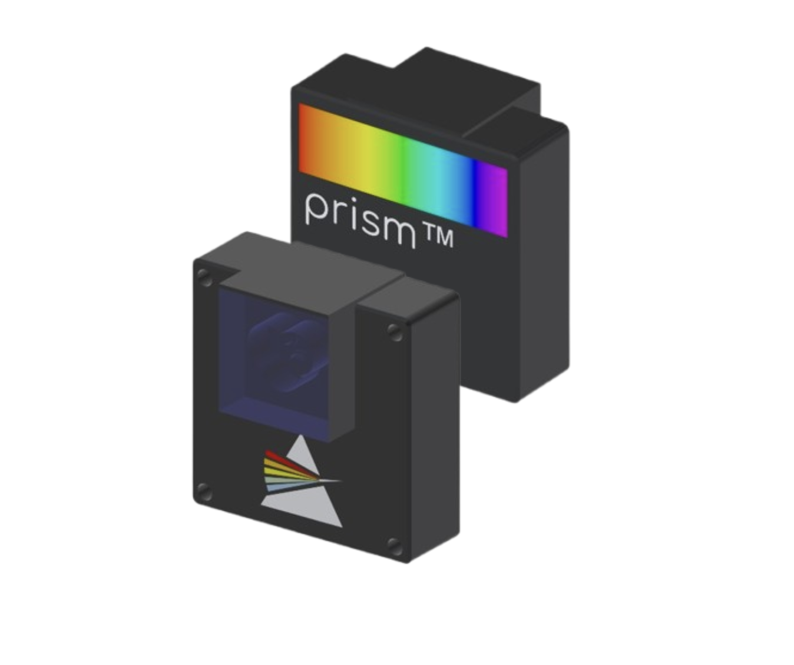
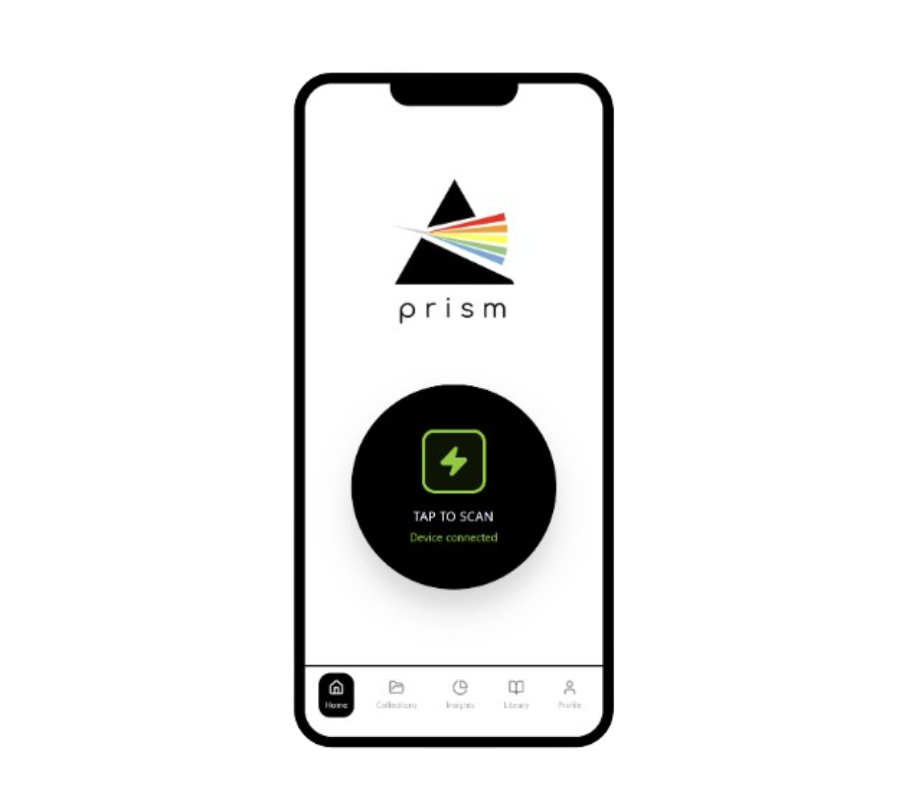
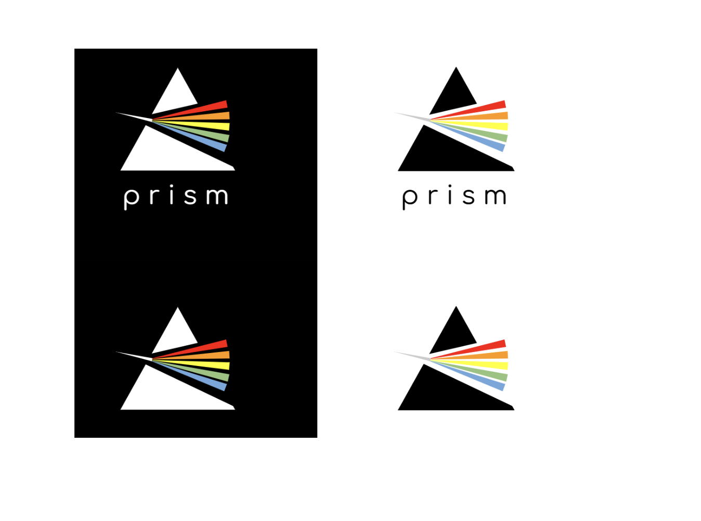

PRISM™ — See What Your Clothes Are Really Made Of
A pocket-size NIR scanner and app that reveal the true fiber composition of any garment in seconds.
Scroll to ExploreWhy Clothing Labels Aren't Enough
Studies show that a large share of clothing labels are inaccurate or incomplete. For people with allergies, sensitive skin, or concerns about chemical treatments, generic labels are not enough. PRISM™ explores how consumer-grade NIR spectroscopy and AI could close this information gap at the moment of decision.
Who We Designed For
Primary Users
People with allergies or sensitive skin who need reliable fiber information beyond labels.
Secondary Users
Sustainability-minded shoppers who want transparency and data-driven textile choices.
Key Insights
Most shoppers trust labels by default—even if they know they might be wrong.
Health-conscious users want verification but have no reliable tools.
Any scanning solution must be fast, portable, and low-friction.
What Is PRISM™?
PRISM™ is a portable NIR scanner paired with a mobile app. The scanner reads the spectral signature of fabrics; the app processes those readings with an AI model and material database to generate clear, personalized insights.

PRISM Scanner
Palm-size NIR device

PRISM App
Companion mobile interface

Brand System
Spectrum-inspired visual identity
Product Video
Watch how PRISM™ transforms the way we understand our clothing
Scanning a Garment in the Store
Connect & Tap to Scan
Open the app and connect to your PRISM scanner via Bluetooth.
Point at the Fabric
Hold the scanner against the garment's fabric surface.
Real-Time Analysis
The device captures spectral data and sends it to the app for processing.
Material & Health Insights
View fiber composition, allergen alerts, and care recommendations.
Save to Collections
Add the garment to your digital wardrobe for future reference.
Key Features
Instant Material Verification
Get accurate fiber composition data in seconds, beyond what labels claim.
Personalized Health Alerts
Receive warnings about allergens and materials that may trigger sensitivities.
Care & Longevity Guidance
Learn how to properly care for each material to extend garment lifespan.
Collections & Wardrobe View
Build a digital catalog of your scanned garments with full material profiles.
Material Library
Explore an extensive database of textiles with sustainability ratings and health information.
Beyond Individual Shoppers
Retailers & Fashion Brands
Thrift & Resale Platforms
Laundry & Garment-Care Services
PRISM combines hardware sales with a subscription layer for advanced insights. For businesses, its detection pipeline can be exposed via SaaS dashboards and APIs.
Hardware, App, and Brand
What I Learned & What's Next
PRISM taught me how invisible material qualities can be translated into everyday decisions. Next steps include prototyping with real NIR sensors, validating spectral accuracy, and refining language with dermatology experts.